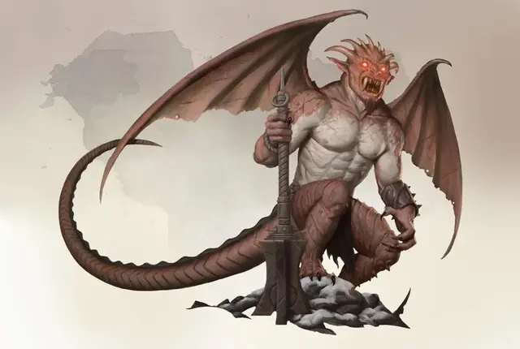

Хутиджин
Hutijin
Большое Исчадие (Дьявол), законно-злое, именной НИП

Класс Доспеха 19 (природный доспех)
Хиты 200 (16к10 + 112)
Скорость 30 футов, летая 60 футов
| мод | спас | ||
|---|---|---|---|
| СИЛ | 27 | +8 | +8 |
| ЛОВ | 15 | +2 | +9 |
| ТЕЛ | 25 | +7 | +14 |
| мод | спас | ||
|---|---|---|---|
| ИНТ | 23 | +6 | +6 |
| МДР | 19 | +4 | +11 |
| ХАР | 25 | +7 | +7 |
Навыки Восприятие +11, Запугивание +14
Сопротивление урону холод; дробящий, колющий, рубящий от немагических атак, кроме нанесённых посеребрённым оружием
Иммунитет к урону огонь, яд
Иммунитет к состояниям отравление, очарование, испуг, истощение
Чувства истинное зрение 120 футов, пассивное Восприятие 21
Языки Все, Телепатия 120 фт.
Опасность 21 (33000 опыта)
Бонус мастерства +7
Особенности
Инфернальное отчаяние. Все существа в 30 фт. от Хутиджина, не являющиеся дьяволами совершают спасброски с помехами.
Легендарное сопротивление (3/день). Если Хутиджин проваливает спасбросок, он может вместо этого сделать спасбросок успешным.
Сопротивление магии. Хутиджин получает преимущество на спасброски против заклинаний и прочих магических эффектов.
Регенерация. Хутиджин восстанавливает 20 хитов в начале своего хода. Если он получает урон излучением, эта особенность не работает до начала его следующего хода. Хутиджин умирает только в случае, если начинает ход с 0 хитами и не может регенерировать.
Действия
Мультиатака. Хутиджин совершает одну атаку Укусом, одну атаку Когтями, одну атаку Булавой, и одну атаку Хвостом.
Укус. Рукопашная атака оружием: +15 к попаданию, досягаемость 5 фт., одна цель. Попадание: 15 (2к6 + 8) урона огнём. Цель должна преуспеть в спасброске Телосложения Сл 22, иначе станет отравленной. Будучи отравленной этой атакой, цель не может восстанавливать хиты, и она получает 10 (3к6) урона ядом в начале своего каждого хода. Отравленная цель может повторять спасбросок в конце каждого своего хода, оканчивая на себе данный эффект в случае успеха.
Когти. Рукопашная атака оружием: +15 к попаданию, досягаемость 10 фт., одна цель. Попадание: 17 (2к8 + 8) урона холодом.
Булава. Рукопашная атака оружием: +15 к попаданию, досягаемость 5 фт., одна цель. Попадание: 15 (2к6 + 8) урона огнём.
Хвост. Рукопашная атака оружием: +15 к попаданию, досягаемость 10 фт., одна цель. Попадание: 19 (2к10 + 8) урона звуком.
Использование заклинаний. Хутиджин накладывает одно из следующих заклинаний, используя Харизму в качестве базовой характеристики и без использования материальных компонентов (Сл спасброска от заклинаний 22):
• Неограниченно: смена обличья [alter self] (может стать Средним при смене облика), обнаружение магии [detect magic], удержание чудовища [hold monster], невидимость [invisibility] (только на себя), молния [lightning bolt], внушение [suggestion], огненная стена [wall of fire];
• 3/день каждое: рассеивание магии [dispel magic].
Телепортация. Хутиджин магическим образом телепортируется вместе со всем своим снаряжением на расстояние до 120 фт. на свободное пространство в пределах его видимости.
Реакции
Ужасающий голос (перезарядка 5-6). В ответ на получение урона, Хутиджин изрекает ужасающее слово силы. Все существа в 30 футах то него и не являющиеся дьяволами должны преуспеть в спасброске Мудрости Сл 22 или стать испуганными им в течение минуты. Испуганная цель может повторять спасбросок в конце каждого своего хода, переставая быть испуганной при успехе. Существо, преуспевшее в спасброске, становится невосприимчивым к действие Ужасающего голоса на дальнейшие 24 часа.
Легендарные действия
Хутиджин может совершить 3 легендарных действия, выбирая из представленных ниже вариантов. За один раз можно использовать только одно легендарное действие, и только в конце хода другого существа. Хутиджин восстанавливает использованные легендарные действия в начале своего хода.
Атака. Хутиджин совершает одну атаку Когтями, Булавой или Хвостом.
Телепортация. Хутиджин использует своё действие телепортации.
Буря (стоит 2 действия). Хутиджин выпускает вокруг себя заряды молний, поражающие всех в радиусе 30 футов от него. Все существа в зоне поражения должны пройти спасбросок Ловкости Сл 22, получая 18 (4к8) урона электричеством при провале или половину этого урона в случае успеха.
Описание
Политика в Девяти Адах совсем не предсказуема. Сплошь и рядом образуются союзы, но большинство из них распадаются из-за измен и предательств. Несмотря на все эти предательства и клевету, дьяволы время от времени действительно проявляют верность, предлагая непоколебимую службу своим хозяевам. Одним из таких примеров, является Хутиджин, герцог Кании и верный слуга Мефистофеля.
Во всех Преисподнях, имя Хутиджина вселяет страх и неприязнь низшим дьяволам, поскольку в распоряжении этого герцога находятся два батальона Исчадий Преисподней, образующие высшее сословие в Кании. С такими солдатами под его командованием, Хутиджин может с лёгкостью сломить любого противника, стоящего у него на пути, и обеспечить высшую защиту Мефистофелю против армий, что могут попытаться оспорить его владычество. Хутиджин накопил достаточно сил, чтобы самому свергнуть правителя Кании, но он никогда не сомневался в поддержке своего хозяина, вероятно полагая, что у Мефистофеля есть некая власть над ним.
За пределами Девяти Преисподних, Хутиджин – относительно малоизвестная личность, которая известна только самым начитанным инфернальным исследователям. У него нет своего собственного культа, а число его слуг значительно мало. Причина проста: Хутиджин ненавидит смертных. Будучи призванным из Преисподней, он дарит инициатору лишь долгую и мучительную смерть.
Мефистофель запрещает Хутиджину часто выходить в Материальный План, поскольку отсутствие герцога, сделает его хозяина более уязвимой целью для своих конкурентов. Прочие архидьяволы знают, как сильно Хутиджин презирает смертных и в тайне распространили средства для его призыва из Девяти Преисподней в надежде отвлечь архидьявола на достаточно продолжительное время для них, чтобы попытаться избавиться от Мефистофеля. Хутиджин отправляет дьяволов в Материальный План, чтобы уничтожить любое его упоминание и убить любого, кто знает о его имени или других характеристиках, но призывы до сих пор случаются. Будучи призванным со своего поста, он старается как можно скорее договорится, закрывая сделку с мелкой ценой для самого призывателя. Однако, заключив сделку, Хутиджин отплачивает того смертью.